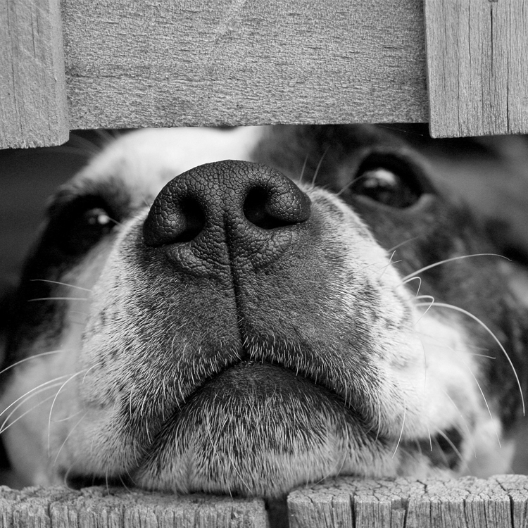
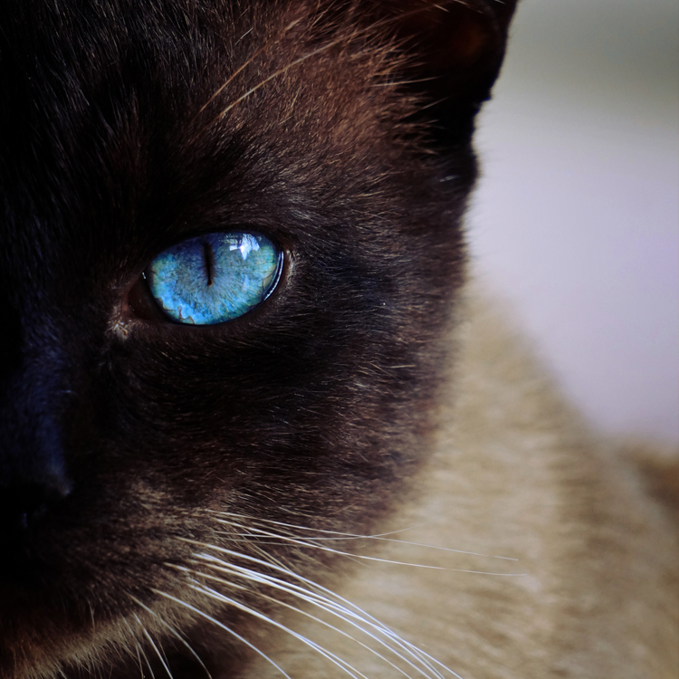

Quite simply, the All Pets Wellness Foundation (APWF) was founded to save the lives of animals by addressing two pressing situations seen every day in in our country. Initially, the APWF will assist in decreasing the number of companion animals euthanized before they reach what should be their natural end of life and, soon, the foundation will increase the rate with which animals who are relinquished move through the shelter system and into a new loving home.
Anyone who has had a companion animal as part of their family knows there is a risk that their pet may someday require an expensive medical procedure to save their lives. We all hope this day will never come, but unfortunately it does occur. Sadder yet is the fact that regardless of how prepared a family tries to be, there are instances when the medical treatment needed to save their pet’s life is beyond the family’s financial means. In these instances, the difficult decision must be made to either euthanize their pet or relinquish them to an animal shelter.
The APWF was founded to help assist in closing this financial gap and keep pets healthy and where they belong, with their family. By working with pre-approved partner veterinarians, APWF ensures the greatest level of fiscal responsibility for our donors and in return our donors know they are literally saving the life of a beloved family pet.
Our application process for both the family requesting assistance and the doctor’s seeking to partner with the APWF are detailed and all applications are reviewed by a committee of professionals, including veterinarians and people with strong financial backgrounds. Our goal is not to make getting help difficult, but we understand our responsibility to our donors to have procedures in place to maximize the use of their financial support.
The second objective of the APWF is to increase the efficiency of the animal shelter system, thus decreasing the time animals spend in shelters. This increased efficiency will also save lives by moving animals from over-crowded facilities to ones that have room to make them available for adoption.
It is an unfortunate fact that companion animals will end up in animal shelters. There are many reasons for this and as outlined above, the APWF is going to address one of the reasons by providing financial assistance to families in need. We at the APWF didn’t think this went far enough though. We also want to help those animals that do find their way into the shelter system.
The management team of the APWF has many years of experience in animal welfare and we all appreciate the hard work done every day at animal shelters across the country to save the lives of our beloved pets. We want to help these shelters by providing a service long overdue.
Transferring animals from one shelter to another is not a new practice, but because each animal organization is independent in its operations, there isn’t an efficient means to match animals from an over-crowed shelter to one with available space. The APWF will remedy this situation with a state-of-the-art “transfer facility”, the first of which will be in the Chicago metropolitan area. The role this facility will play in saving animals lives is that it will act as a way-station for animals to receive the medical treatment they require before moving on to a licensed animal shelter for adoption.
It is very difficult to maintain the health of animals in a shelter environment, so the APWF facility will be designed with the animal’s health in mind, thus when they are transferred to another shelter for adoption, they won’t introduce an illness to an already healthy population.
Please see the “transfer facility” page for more information and how you can join us in our efforts.
The All Pets Wellness Foundation cannot exist with the support from people like you. Please visit our Support page to learn more on how you can get involved and save the life of an animal in need.